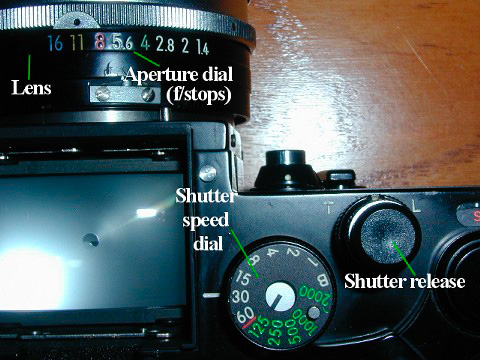
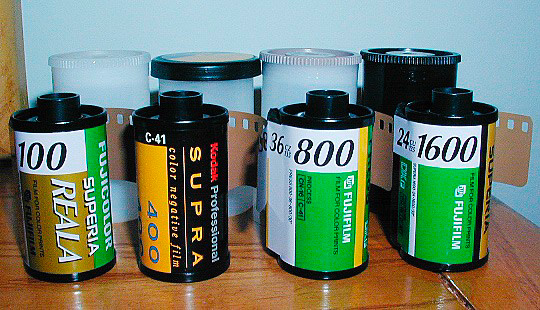

Camera (very) Fundamentals
(In 12 Easy Pictures)
Version 2.1, page 1, © 2002, 2006 by Dale Cotton, all rights reserved
Digital: I fully expect that the vast majority of people reading this tutorial will own a digital camera. Nevertheless, it is much easier to get across the fundamental concepts if we first consider the most basic technology - a piece of film in a light-tight box - then apply the underlying principles to a more sophisticated device, such as a digital camera. I will indicate the digital equivalent to each concept throughout the tutorial in green text boxes like this.

Fig 1. Camera controls
"I just bought an SLR camera after using a point-and-shoot all my life. What are all these f/stops and shutter speeds and other technical gibberish? The manual that came with the camera seems to assume I already understand this stuff. Yet I can't find anything on-line that explains it clearly. Help!"
Photography forums get messages like this most every day. In the following tutorial, I'll try to assume nothing, keep my explanations as simple as possible without glossing over any essentials, while skipping any unnecessary technicalities.
"I use my camera set on automatic all the time. It seems like half my pictures have problems, so I guess I have to figure out all the technical stuff if I want to take better pictures. Help!"
Most modern cameras have a P (Program) setting to make all the decisions for you. Most serious photographers avoid P as though it stands for Plague. How can the camera know whether you need everything in focus or only the main subject in focus for a given scene? How can it know whether to give you the fastest possible shutter speed or the slowest or something in between for a given situation?
There are four crucial controls on a camera: an aperture dial, a shutter speed dial, an ISO dial, and focus. Knowing your way around them puts you in charge of the camera, not the other way 'round.
Chapter One: ISO and EV

Fig 2. Films with various ISO ratings
Film is light sensitve. I'm sure you know that if you take a roll of film and pull the film out of the spool in daylight it will be ruined. That's because it only takes a small dose of light to do the job. Exactly how small a dose is specified by the ISO (International Standards Organization) number of the film. The higher the ISO number of the film, the less light it takes to put a picture on it. Drug store film typically comes in ISO ratings of 100, 200, and 400, for example. ISO 400 film needs only half the amount of light that ISO 200 film needs to get a clear picture on the film. ISO 100 film needs twice the amount of light that ISO 200 needs.
So why do we need different ISO film? High ISO film, like 400, gets the picture on film in very short times. This lets us work in dimmer light or hand-hold in brighter light. The downside is that 400 ISO film is grainier than 100 ISO film, and the bigger you enlarge the picture the more the grain becomes visible.
Digital: Digital cameras have ISO sensitivity options just like film. With a digital camera you choose the ISO setting with a dial or menu choice rather than by switching to a different film. Technically, increasing ISO digitally is a matter of stepping up the gain on the signal.
The dose of light needed to produce an image on a particular film (or the sensor in a digital camera) is called the exposure. Light is made up of extremely tiny particles called photons. Let's say the correct exposure for ISO 100 film frame is 100 gadzillion photons. In that case, it would take exactly 50 gadzillion photons to correctly expose an ISO 200 film frame.
But why ISO ratings like 100, 200, 400 and not 100, 110, 120? This was probably determined by trial and error. However we now know it is based on the physiology of human optics.
Fig 3. Brightnesses divided into ten steps
Key fact: It takes a doubling of the actual brightness of light for us to perceive a single step in apparent brightness. Each step going from left to right in Fig 3 reflects twice the number of photons as the one before it.
Doubling and halving brightnesses (exposure values) is the heart of photography. Simple, tidy, and easy.
|